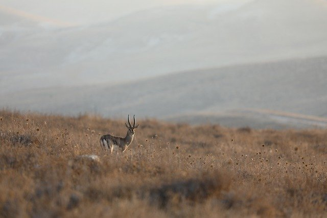

The Streets of Nairobi
Pupblished: 16/5/2025
Kencom House is a prominent landmark situated in Nairobi's Central Business District (CBD), at the intersection of Moi Avenue and City-Hall Way. Completed in 1977, it was designed by architect George Vamos and constructed under the leadership of John Michuki during his tenure as chairman of Kenya Commercial Bank (KCB) .
For those navigating Nairobi, Kencom House serves as a convenient reference point and a gateway to the city's vibrant culture and commerce
Home..
The only City with a National Park at the center-The city of the Sun
Published: 15/05/2025

Located just 7 kilometers (4 miles) from the city center, Nairobi National Park offers a rare blend of urban life and raw wilderness. As skyscrapers and city buildings form a dramatic backdrop, visitors can observe a wide array of wildlife in a natural savanna setting.
Key Features of the National Park
- Wildlife: The park is home to a diverse range of animals, including lions, giraffes, zebras, and rhinos.
- Accessibility: Its proximity to the city center makes it easy for both locals and tourists to visit.
- Conservation: The park plays a crucial role in wildlife conservation and education.
- Activities: Visitors can enjoy game drives, picnics, and guided tours.
Home..
Pets in Nairobi
published: 07/01/2024

In Nairobi, pets, particularly dogs and cats, are increasingly popular and cherished companions, with a growing number of pet-related businesses catering to their needs. While pet ownership is becoming more common, it's also important to consider the challenges and regulations involved in caring for animals in the city
Home..